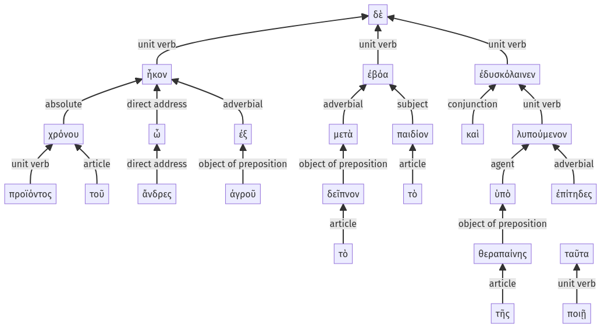

Lysias, Oration 1, 1.11.1-1.11.28a
1.10.24-1.10.49a | 1.11.29-1.11.33a
Sentence 22
1.11.1-1.11.28a
προϊόντος δὲ τοῦ χρόνου, ὦ ἄνδρες, ἧκον μὲν ἀπροσδοκήτως ἐξ ἀγροῦ, μετὰ δὲ τὸ δεῖπνον τὸ παιδίον ἐβόα καὶ ἐδυσκόλαινεν ὑπὸ τῆς θεραπαίνης ἐπίτηδες λυπούμενον, ἵνα ταῦτα ποιῇ:
2 προϊόντος τοῦ χρόνου
1 ὦ ἄνδρες ἧκον μὲν ἀπροσδοκήτως ἐξ ἀγροῦ
1 μετὰ δὲ τὸ δεῖπνον τὸ παιδίον ἐβόα
1 καὶ ἐδυσκόλαινεν
2 ὑπὸ τῆς θεραπαίνης ἐπίτηδες λυπούμενον
3 ἵνα ταῦτα ποιῇ
προϊόντος δὲ τοῦ χρόνου, ὦ ἄνδρες, ἧκον μὲν ἀπροσδοκήτως ἐξ ἀγροῦ, μετὰ δὲ τὸ δεῖπνον τὸ παιδίον ἐβόα καὶ ἐδυσκόλαινεν ὑπὸ τῆς θεραπαίνης ἐπίτηδες λυπούμενον, ἵνα ταῦτα ποιῇ:
Highlighting:
- connecting words
- unit verb
- subject
- object
Color code:
- independent clause (level 1, intransitive verb)
- circumstantial participle (level 2, intransitive verb)
- independent clause (level 1, intransitive verb)
- independent clause (level 1, intransitive verb)
- circumstantial participle (level 2, transitive verb)
- subordinate clause (level 3, transitive verb)
